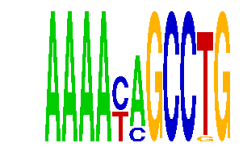

family_6 |
|---|
|  |
| Download PWM |
| Download instances (motifs) |
| Show motif distribution |
Query_ID | Query_Consensus | Subject_Name | Source_DB | Subject_ID | Length | Orientation | Offset | Divergence | Overlap | Subject_Consensus |
|---|---|---|---|---|---|---|---|---|---|---|
| family_6 | AAAACAGCCTG | NFATC2 | JASPAR | MA0152.1 | 7 | reverse-complement | -3 | 0.458 | 4 | TTTTCCA |
Sequence | Start_position (from start) | Start_position (from end) | Average conservation | Best conservation score | Instance_with_best_CS | Best_Z-score | Instance_with_best_ZS | Strand |
|---|---|---|---|---|---|---|---|---|
| chr18:55070803-55071803 | 716 | 727 | 0.00718182 | 0.026 | AAAAYAGCCKG | 16.767872 | AAAAYAGCCKG | -1 |
| chr9:84983651-84984651 | 410 | 421 | 0.605545 | 0.983 | AAAAYMGCCTG | 16.767872 | AAAAYAGCCKG | 1 |
| chr12:12816687-12817687 | 479 | 490 | 0.00163636 | 0.01 | AAAAYAGCCKG | 16.767872 | AAAAYAGCCTG | 1 |
| chr2:94103378-94104378 | 572 | 583 | 0.899 | 0.995 | AAAAYMGCCTG | 18.51029 | AAAAYMGCCTG | -1 |
| chr11:21468789-21470752 | 1624 | 1635 | 0.206455 | 0.463 | AAAAYAGCCKG | 18.51029 | AAAAYMGCCTG | -1 |
| chr1:140808583-140809583 | 970 | 981 | 0.998909 | 1 | AAAAYAGCCTG | 16.767872 | AAAAYAGCCKG | 1 |
| chr16:25683467-25684467 | 75 | 86 | 0.143727 | 0.44 | AAAAYAGCCTG | 16.767872 | AAAAYAGCCKG | -1 |
| chr1:40862276-40863276 | 111 | 122 | 0.768818 | 1 | AAAAYAGCCKG | 16.767872 | AAAAYAGCCTG | 1 |
| chr17:71347316-71348316 | 712 | 723 | 0.424091 | 0.966 | AAAAYAGCCTG | 16.767872 | AAAAYAGCCKG | 1 |
| chr6:127715869-127716869 | 475 | 486 | 0.557364 | 0.693 | AAAAYAGCCKG | 16.767872 | AAAAYAGCCTG | 1 |
| chr19:25740204-25741204 | 44 | 55 | 0.0545455 | 0.096 | AAAAYMGCCTG | 18.51029 | AAAAYMGCCTG | -1 |
| chr4:133371930-133372930 | 539 | 550 | 0.0442727 | 0.295 | AAAAYAGCCTG | 16.767872 | AAAAYAGCCKG | 1 |
| chr11:17360526-17361526 | 358 | 369 | 0.228727 | 0.342 | AAAAYMGCCTG | 18.51029 | AAAAYMGCCTG | 1 |
| chr7:137325702-137326702 | 705 | 716 | 0.685909 | 1 | AAAAYAGCCTG | 16.767872 | AAAAYAGCCKG | -1 |
| chr1:120878036-120879036 | 444 | 455 | 0.00127273 | 0.004 | AAAAYMGCCTG | 16.767872 | AAAAYAGCCKG | 1 |
| chr19:22979188-22980188 | 723 | 734 | 0.446636 | 1 | AAAAYAGCCTG | 16.767872 | AAAAYAGCCKG | 1 |